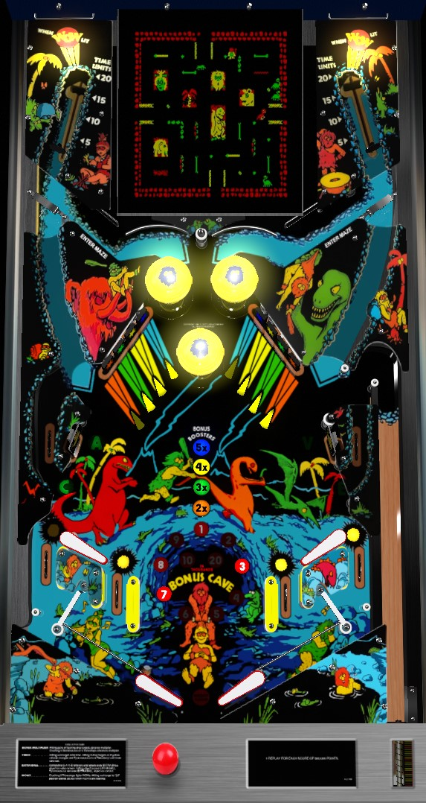

This is a hybrid pinball and video game. Landing in either of the semi-hidden saucers near the left and right pop bumpers triggers the video game. Rules of both the pinball and video games are explained.
Knock down both of whichever drop targets are flashing to advance the bonus multiplier. Spell Cave from the lower playfield standup targets and side lanes to light the in/out lanes for 5,000 points, a bonus advance, and the ability to add a Pterodactyl to the video game. Access the video game by shooting the orbits; harder shots equal more bonus time. Run over the green and yellow Brontosaurus, Triceratops, and Pterodactyls to bop them, but run from the red Tyrannosaurus, which ends your game and your ball. In a pinch, escape via any alcoves on the sides that don't have a line near the edge of the screen.
The video game is accessed via the saucers near the bumper area. You can "sneak in" to the saucers from within the bumpers themselves, but you can also access the video game by shooting the orbits; as the ball comes down the orbit, a one way gate will redirect it into the saucer.
The Caveman appears in either the left or right Alcove near the edges of the screen based on which saucer the pinball went into. Use the joystick on the front of the game to move the Caveman. Your goal is to kill all 5 green Brontosaurus or green and yellow Triceratops by running over them. Defeating a Brontosaurus or Triceratops turns it into a red Tyrannosaurus; running into a Tyrannosaurus not only kicks you out of the video game, but locks the flippers, forcing you to drain your pinball as well. Killing all 5 Brontosaurus scores 50,000 points, advances the bonus multiplier, and turns all dinosaurs on screen into Triceratops. Killing all 5 Triceratops also scores 50,000 points and a bonus multiplier, but also lights the vary-targets to score a Wow (25,000 points) from a full shot. Killing all 5 Triceratops additionally converts all dinosaurs back into Brontosaurus and changes the colours of the game. At any time, you can enter any of the four Alcoves around the edges of the game to escape back to the pinball- except for the Alcove you entered the video game from, as this one just serves as a safe haven.
Collect the letters in Cave from the two side lanes and the two standup targets in the lower half of the playfield; hit lit lanes or targets to unlight them. Lit lanes and targets score 5,000 points, advance the bonus, and light one of the in/out lanes at the bottom of the table. Unlit lanes and targets score 500 points. Lit in/out lanes score 5,000 points and a bonus advance; if there are any Tyrannosaurus currently on screen in the video game, making a lit in/out lane turns one of them into a Pterodactyl. Pterodactyls score 5 bonus advances when killed in the video game.
When you enter the video game, a bonus timer starts. If you "sneak in" to the video game via the bumpers, your bonus timer is always 5 seconds; if you entered the video game following an orbit shot, your bonus timer is 5, 10, 15, or 20 seconds depending on how hard the vary-target in the back corner of the game was hit during your orbit shot. At the end of the bonus timer, all Pterodactyls on screen in the video game instantly turn back into Tyrannosaurus. Pterodactyls turn into Tyrannosaurus when killed as well. You can continue playing the video game even after the bonus timer expires. If you use an Alcove to leave the video game before the timer expires, the remaining time on the clock is forfeited.
Completing Cave in the pinball game lights a flashing dot near the center of the video game maze. Depending on game settings, collecting the flashing dot scores either an instant extra ball or 100,000 points.
As many as two of the eight drop targets in the center of the game will be flashing at any time. Hit a flashing drop target to light it solidly. Completing one of the 4-banks of drop targets to reset it. Lit or flashing drop targets score 5,000 points and a bonus advance. Unlit drop targets score 500 points. Hitting both of the flashing drop targets advances the bonus multiplier and causes two previously-unlit drop targets to start flashing. Hitting a solidly lit drop target turns one Tyrannosaurus currently on screen in the video game into a Pterodactyl, if there is one.
On default settings, if you run into a Tyrannosaurus in the video game, you are kicked out of the video game, but the pinball flippers are disabled, causing you to forcibly lose your ball too. However, there is a game setting or code revision somewhere that makes it so that you need to die in the video game 3 times before the video game will forcibly end your pinball turn too. If you drain while playing pinball, or if the video game ends your pinball turn, your bonus is scored, maxing out at 5x 29,000 = 145,000 points. If you tilt at any time- during pinball or during the video game- your turn ends with the pinball being drained and no end of ball bonus being scored.